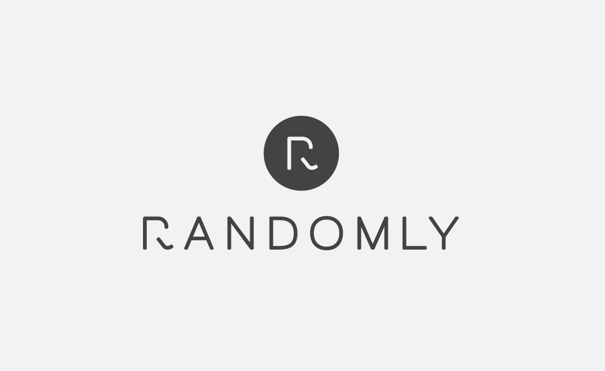

<mat-toolbar class="toolbar">
    <div class="first-container">
        <button mat-icon-button class="example-icon" aria-label="Example icon-button with menu icon"
            (click)="drawer.toggle()">
            <mat-icon>menu</mat-icon>
        </button>
        
    </div>
    <div class="middle-container">
        <p class="head-text">Talent Acquisition</p>
    </div>
    <div class="last-container">
        <strong class="fa-solid fa-bell fa-lg"></strong>
        
        <strong class="fa-solid fa-ellipsis-v fa-lg"></strong>
    </div>
</mat-toolbar>
<mat-drawer-container class="sidenav-container" autosize>
    <mat-drawer #drawer class="sidenav" [mode]="mobileQuery.matches ? 'over':'side'" [opened]="!mobileQuery.matches">
        <ul>
            <li class="menu">
                <a class="menu-items" routerLink="/home" routerLinkActive="route-active">home</a>
                <a class="menu-items" routerLink="/jobs" routerLinkActive="route-active">jobs</a>
                <a class="menu-items" routerLink="/dashboard" routerLinkActive="route-active">dashboard</a>
                <a class="menu-items" routerLink="/candidate" routerLinkActive="route-active">candidates</a>
                <a class="menu-items" routerLink="/search" routerLinkActive="route-active">search</a>
                <a class="menu-items" routerLink="/reports" routerLinkActive="route-active">reports</a>
            </li>
        </ul>
    </mat-drawer>
    <div class="routing">
        <router-outlet></router-outlet>
    </div>
</mat-drawer-container>